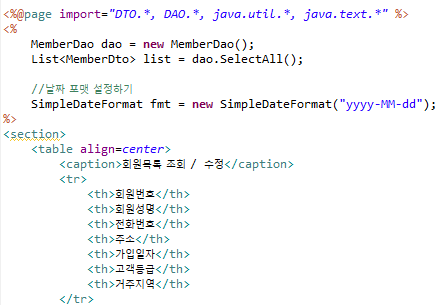

1. 우선 DAO에서 Select 코드를 작성하자
전체출력 Select All과 where절을 이용한 Select로 두개 만든다
Select All의 경우 여러 컬럼값을 받아와야해서 리스트형으로 만든다
2. DAO 코드를 완성했다면 이제 jsp파일에 이것을 출력해야한다
info.jsp에 그것을 출력할 수 있도록 내용을 작성해준다

3. 전체출력이므로 for문으로 SelectAll로 list를 여러번 불러와야한다
회원번호 부분은 해당 번호를 클릭하면 수정이 가능하게 하는 링크이지만 현재 미구현
나머지는 list에서 i번째의 각 항목들을 불러오는 방식이다
4. 날짜부분은 위에서 설정된 날짜포맷을 문자열에서 Date로 변환해주고
Grade부분은 A,B,C에 따라서 등급을 출력하게 if문을 사용했다
5. 작성이 완료되었다면 서버를 켜서 잘 출력되는지 확인해보자
회원매출조회도 MoneyDto,MoneyDao를 이용해 구현하면 된다